Наука · журнал «ДентАрт» 2018 №4
Морфоархітектоніка оклюзійних і проксимальних поверхонь перших постійних молярів. Частина VI
MORPHOARCHITECTONICS OF OCCLUSAL AND PROXIMAL SURFACES OF THE FIRST CONSTANT MOLARS. PART VI
Олександр Постолакі,ДУМФ ім. Ніколає Тестеміцану (м. Кишинів, Республіка Молдова)
«Головне – дивитися!»
Гіппократ (бл. 460 – бл. 370 р. до н.е.)
Перший моляр нижньої щелепи
На жувальній поверхні першого нижнього моляра виділяють 5 основних горбиків: 1) протоконід (медіально-щічний); 2) гіпоконід (дистально-щічний); 3) метаконід (медіально-язичний); 4) ентоконід (дистально-язичний); 5) гіпоконулід (дистальний горбик) (рис. 1). Борозни, які обмежують гребені горбиків, сходяться на жувальній поверхні в центральній ямці і утворюють візерунок, що нагадує літеру ігрек (ігрек-візерунок, Y5). При уважному огляді коронки помітно, що вестибулярна борозенка проходить дещо мезіальніше лінгвальної. У вихідному типі в центрі коронки – метаконід і гіпоконід, а контакт між прото- і ентоконідом відсутній. У філогенезі гомінідів відбувалося перетворення цього візерунка на візерунок, схожий на хрест або знак плюс, при якому протоконід і ентоконід вступили в контакт у центрі коронки (плюс-візерунок).
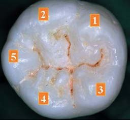
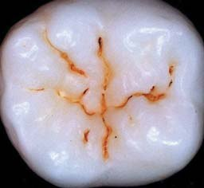
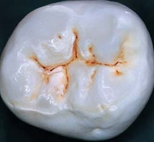
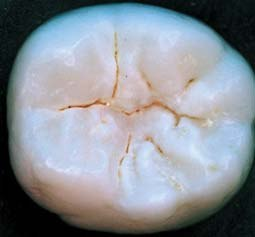
Рис. 1. Характерні варіації візерунків для нижніх молярів сучасної людини: а, б) «плюс-візерунок»; в) «Х-візерунок»; г) «Y-візерунок» (фото О. Постолакі).
Ці варіації візерунків характерні для нижніх молярів сучасної людини, але зустрічаються різні їх модифікації у зв'язку зі складним рядом редукції – диференціації, що включає велику кількість форм з різною кількістю горбиків (рис. 1, 2).1
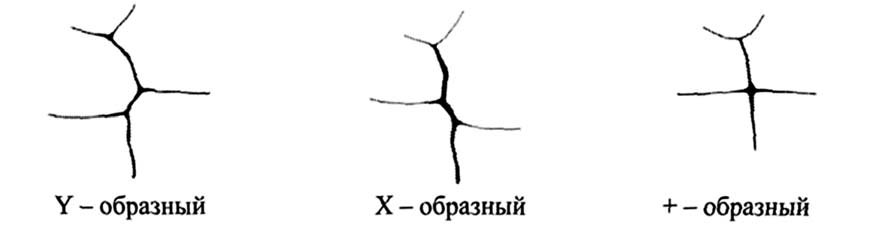
Рис. 2. «Y-візерунок» – контакт між метаконідом і гіпоконідом; «Х-візерунок» – контакт між протоконідом і ентоконідом; «+ візерунок» – вестибулярні і язичні горбики мають одну спільну точку контакту в зоні центральної ямки. (Схема І. М. Расулова, 2011).2
У протоконіда мезіальний гребінь здебільшого не виражений: він зливається з крайовим гребенем. Головний і дистальний гребені розташовуються паралельно один одному, проходячи майже чітко у вестибуло-лінгвальному напрямку, і візерунок зазвичай досить простий. Подрібнення на окремі елементи практично ніколи не спостерігається.
Структура ентоконіда відрізняється сильною варіабельністю окремих елементів. При сильному розвитку головного гребеня він може доходити до центральної ямки. Тоді бічні гребені зазвичай проходять паралельно йому. В інших випадках спостерігається перерозвиток бічних гребенів, так що вони, зближуючись, підходять до центральної ямки, виступаючи попереду коротшого головного гребеня. Це явище аналогічне перерозвитку бічних гребенів метаконіда. Мезіальний гребінь ентоконіда може відокремлюватися, даючи внутрішній середній додатковий горбик.1
У п'ятигорбиковому типі дистальну поверхню у середній її частині займає гіпоконулід. У той же час у порівнянні з ентоконідом цей горбик завжди менший висотою. Його вершина може бути зміщена вестибулярно, як уже було зазначено і нами в статті (частина III), але може розташовуватися симетрично на середній лінії коронки. Контактна фасетка у Y5-типу розташовується на поверхні гіпоконуліда в оклюзивній третині коронки.
«Залежно від ступеня редукції горбиків «талоніда» структура дистальної поверхні сильно варіює. Вона утворена то двома майже рівними, то дуже різними за величиною горбиками, то одним великим горбиком (тригорбковий тип). Залежно від цього варіює ступінь опуклості поверхні і положення контактних точок на ній» (рис. 3).1
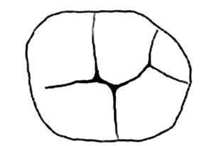
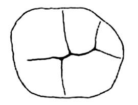
Рис. 3. Варіанти будови жувальної поверхні нижніх молярів: а) Y-подібний тип візерунка борозен; б) Х-подібний тип візерунка борозен. (Схема і опис І. М. Расулова, 2011).2
Один з аспектів еволюційної редукції зубів людини – спрощення зовнішньої зміни жувального рельєфу поверхні. Спеціалізація цього процесу полягає не у втраті генетично запланованих елементів, а в їх поступовому «похованні» у товстий шар емалі. Це пояснюється виникненням у стародавніх гомінідів здатності до ретельного перетирання їжі, у поєднанні з різноманіттям жувальних рухів, що привело, разом з прямоходінням, до значних анатомо-морфологічних перетворень у зубо-щелепно-лицьовій системі і відобразилося у Homo sapiens у збільшенні відносної товщини емалевого шару, найбільшої серед гомінідів, «стиранні» виступаючих елементів, зменшенні їх кількості (рис. 4).1
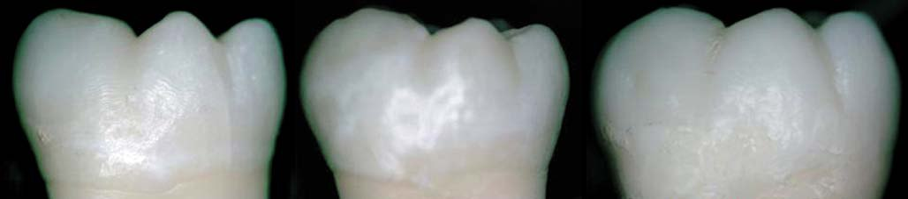
Рис. 4. Перший моляр нижньої щелепи. Контури проксимальних поверхонь коронок перших молярів верхньої і нижньої щелеп конвергують до шийки зуба. Нерідко мезіальний контур трохи більше відхиляється до умовної середньої вертикалі зуба, ніж дистальний (фото О. Постолакі).
А. О. Зубов, М. І. Халдєєва (1989) вказують, що дослідження фотознімків зі зліпків внутрішньої поверхні коронки молярів засвідчило наявність більш архаїчної схеми будови гребенів і горбиків. Ці зміни рельєфу дуже незначною мірою зачіпають систему борозен, аж до дрібних елементів третього порядку. Автори припускають, що причиною є відносно більша нейтральність борозен у порівнянні з виступаючими елементами жувальної поверхні. «Ця обставина є важливим аргументом на користь застосування одонтогліфіки як методу дослідження морфології зубів людини: візерунок борозен меншою мірою ухиляється від будови внутрішньої структури і одночасно є виразником нових співвідношень елементів жувальної поверхні. Зокрема, на місці гребенів, прихованих під товстим шаром емалі, дуже часто утворюється безперервна ділянка борозни, хоча загальний напрямок останньої в цілому на внутрішній і зовнішній поверхнях емалі практично збігається» (рис. 5, 6).3
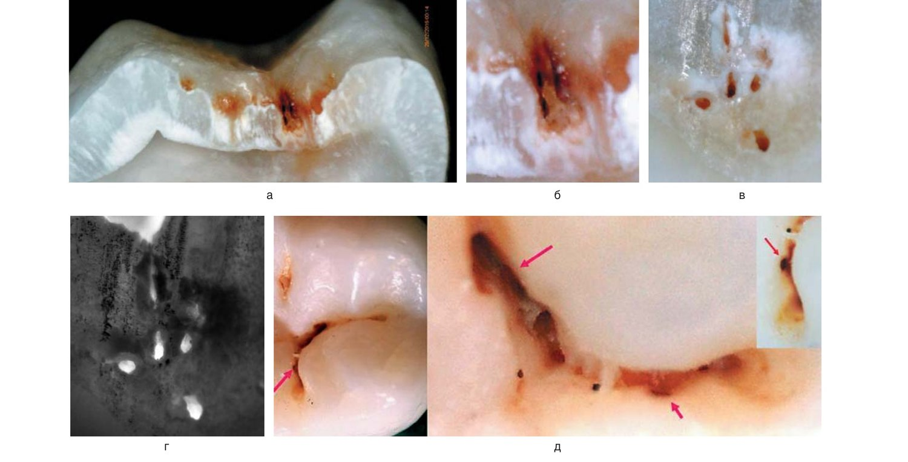
Рис. 5. Анатомо-морфологічні особливості будови фісур бічних зубів. Під поверхнею фісури виявлено окремі отвори, які, ймовірно, є частиною прихованих у глибині «тунелів», що мають між собою сполучення (а-г). На дні і бічних стінках фісур виявлено отвори різної форми і діаметру, які можуть мати таке пояснення: 1) устя мікроканалів, які виконують дренажну функцію; 2) мікроканали, що утворилися через загибель одонтобластів, так звані «мертві шляхи» (д). Мікрофото (зб. х 20). Автор О. Постолакі.
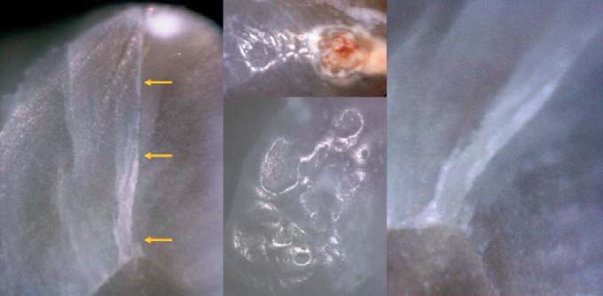
Рис. 6. Поздовжній шліф медіально-вестибулярного горбика нижнього моляра. Від вершини дентинного горбика через товщу емалі проходить канал, в якому, ймовірно, є «нейманівська оболонка» і який на поверхні відкривається отвором. Визначаються ознаки поверхневого хронічного карієсу. На вершині горбика – складний візерунок з оклюзійних фасеток стирання. (Зб. х 20-50. Автор О. Постолакі).
Вивчення анатомічної форми і будови жувальної поверхні зубів людини незмінно становить великий теоретичний і практичний інтерес і є найважливішою умовою для вирішення проблем профілактики, діагностики і лікування з метою естетичної та функціональної реабілітації оклюзії, відновлення малих дефектів зубних рядів мінімально-інвазивними адгезивними технологіями, а також класичними протетичними методами в практиці ортопедичної стоматології.
Встановлено, що каріозні та інтактні зуби мають статистично достовірний різний рельєф оклюзійної поверхні, і ураженість фісур карієсом певною мірою залежить від особливостей одонтогліфіки. Частота ураження карієсом молярів неоднакова і має певну спрямованість та послідовність. Згідно зі спостереженнями, найбільший ризик розвитку карієсу пов'язаний з великою кількістю ямок і звивистих борозен, особливо з одонтогліфічним рисунком Y-4 або Y-5.4, 5 Г. Р. Демчина (2002) вивчала одонтогліфіку 452-х нижніх постійних молярів у дітей Прикарпаття і встановила методами електропровідності і лазерної флюоресценції, що інтенсивніше мінералізуються медіальна ямка і лінгвальна борозна; у центральній і дистальній ямках цей процес відбувається повільніше.4 І частіше уражаються фісури, розташовані на дистальній частині жувальної поверхні молярів (рис. 7).2 Є. А. Писаренко (2013) досліджував одонтогліфічні особливості зубів, які частіше уражаються проксимальним карієсом, і розділив їх на два варіанти: 1) при плюс п'ять (+5) візерунку з віддалено розміщеними альфа і бета ямками і вираженим стрижневим гребенем, що з'єднує протоконід і метаконід; 2) при ігрек чотири або п'ять (Y-4, Y-5) візерунку і вираженому центральному гребені, що з'єднує гіпоконід і метаконід.6
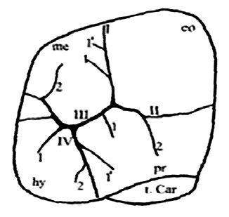
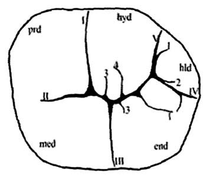
Рис. 7. Фісури верхнього (а) і нижнього (б) молярів. «Карієс достовірно частіше (р<0,05) зустрічався за наявності подібного візерунка фісур, розташованих на дистальній поверхні коронкової частини зуба, саме на тих горбах, які більш схильні до процесів редукції». (Дані І. М. Расулова, 2011).2
За допомогою одонтоскопічного методу і на мікрофотографіях вивчили особливості морфологічної будови та одонтогліфіки в медіальному і дистальному відділі коронки першого нижнього моляра. Були встановлені особливості будови і взаємного розташування емалевих гребенів протоконіда (медіальний вестибулярний горбик) і метаконіда (медіальний язичний горбик); топографічно виділяємо три основних типи положення головного гребеня протоконіда: 1) медіальне; 2) центральне; 3) дистальне. У тих випадках, коли медіальний гребінь протоконіда виражений або дистальний гребінь протоконіда (частково або повністю) зливається з гребенями метаконіда, формуються ізольовані ямки (рис. 8 а, б).
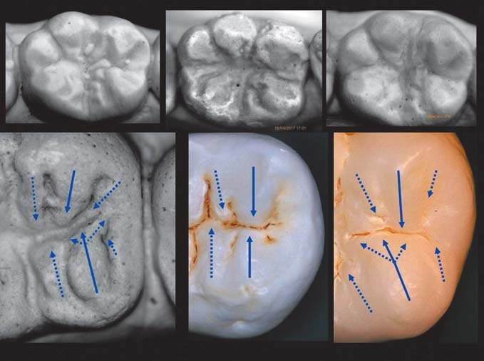
Рис. 8а. Морфологічні особливості будови і взаємного розташування емалевих гребенів протоконіда і метаконіда.
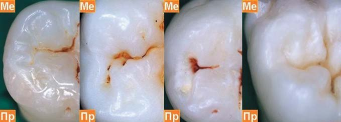
Рис. 8б. Морфологічні особливості будови і взаємного розташування емалевих гребенів протоконіда (медіальний вестибулярний горбик) і метаконіда (медіальний язичний горбик). (Фото і схема О. Постолакі).
У зоні дистального горбика було визначено 3 основні типи візерунка: 1) фісури не досягають крайового гребеня; 2) фісури досягають крайового гребеня (з одного або двох боків); 3) фісури перетинають крайовий гребінь. Складена фотографія з обраних молярів засвідчила, що власне форма, ширина і кривизна крайового гребеня індивідуальні і складніші, ніж видається в схематичних рисунках у літературі. Форма і топографія дистального горбика також варіюють. Отримані результати підтверджують відомості, зазначені в літературі,1-3, 6-8 про еволюційну нестабільність дистального відділу коронки першого нижнього моляра («талоніда») як одного з проявів процесів редукції, що відбуваються у сучасної людини (рис. 11, 12).
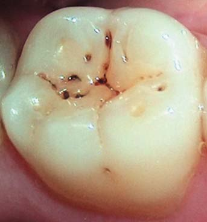
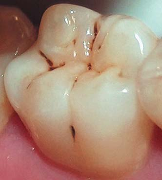
Рис. 9. Перші моляри нижньої щелепи. При з'єднанні головних емалевих гребенів гіпоконіда і метаконіда утворюються різні варіації «Y-візерунка» (а, б). Емалеві гребені на мезіальних горбиках спрямовані в дистальний бік або можуть бути слабо виражені, оскільки протоконід займає мезіо-вестибулярне положення і візерунок борозен нагадує букву Н. Форма коронки близька до трапецієподібної. Вестибулярний контур опуклий в середній 1/3 третині коронки; форма коронки зуба (б) близька до прямокутної. Емалеві гребені на язичних горбиках перетинають мезіо-дистальну борозну, що призвело до утворення ізольованих ямок. Вестибулярний контур відносно прямий у середній 1/3 і опуклий в оклюзійній 1/3 коронки. На схилі дистального язичного горбика видно фасетки стирання (а, б). (Фото О. Постолакі).
Біомеханічне вивчення медіотрузійних контактів і стискання зубів, проведене Baba і співавт. у 2001 р., засвідчило, що при ікловому веденні відбуваються невеликий зсув молярів на однойменному боці і значний зсув молярів протилежного боку. Імовірно, що аналогічним чином зміщуються виростки, при цьому на однойменному боці розвивається менша компресія (стискання), а на протилежному боці – більша.9 Відомо, що за горизонтального напрямку жувальних сил на одному боці відбувається здавлювання тканин періодонтальної щілини, а на другому волокна їх розтягуються.
Звернімося, коротко, до анатомічного опису будови зв'язкового апарату маргінального пародонту для чіткішого розуміння описаної вище біомеханічної реакції. На контактних боках зуба виділяються зубо-ясенна, міжзубна групи волокон і дуже рідко – зубо-альвеолярна горизонтальна. Волокна першої групи беруть початок від цементу біля дна ясенної кишені і йдуть назовні, віялоподібно розподіляючись у сполучній тканині ясен. Волокна другої групи утворюють потужну зв'язку шириною 1-1,2 мм, спрямовану над міжзубною перегородкою від контактної поверхні одного зуба до аналогічної поверхні іншого. Напрямок пучків волокон залежить від форми міжзубної перегородки. За гострої або куполоподібної форми вони мають горизонтальний напрямок, за скошеної форми стають косими. Міжзубна група волокон виконує особливу роль. Вони зберігають безперервність зубного ряду і беруть участь у розподілі жувального тиску. Завдяки цьому мезіальний рух зубів має ланцюговий характер.10
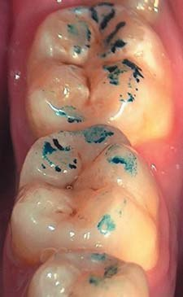
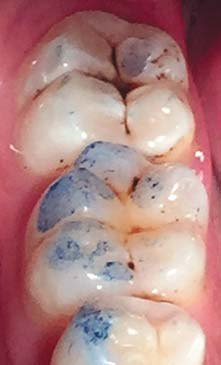
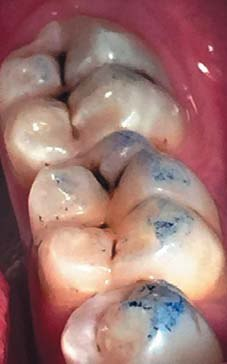
Рис. 10. Перші моляри з «Y-візерунком» фісур. Вестибулярна борозна проходить трохи мезіальніше лінгвальної. У центрі коронки утворюють контакт метаконід і гіпоконід. Оклюзійні контакти на вершинах вестибулярних і дистальному горбиках, у середній і нижній 1/3 дистально-язичного горбика. Нерідко емалеві гребені на схилах бувають слабо виражені або не визначаються через фізіологічну стертість. Ретрузійна напрямна забезпечується контактом дистально-щічного горбика нижньощелепного моляра і поперечного гребеня верхньощелепного моляра. (Фото О. Постолакі).
В одній з попередніх статей (частина IV) ми коротко згадували відомості про два жувальні типи (за Шварцом, 1941), що впливають на шляхи морфогенезу нормального прикусу, в залежності від переважного розвитку власне жувального або скроневого м'яза (масетеріальний і темпоральний тип), інтенсивності і швидкості жування. У свою чергу С. І. Криштаб (1978) після обстеження дітей віком 7-14 років з фізіологічним прикусом дійшов висновку про наявність третього, названого врівноваженим, типу (ознаки обох типів), який за аналогією з нормостенічною конституцією приблизно удвічі численніший, ніж його крайні форми – масетеріальний і темпоральний. При масетеріальному типі опорні горбики у порівнянні з темпоральним типом більш стерті, а у фронтальному відділі характерне неглибоке перекриття нижніх різців, на відміну від темпорального.11 Отже, потрібно не тільки вивчати характер оклюзійних співвідношень, стан «ключа оклюзії» між першими молярами верхньої і нижньої щелеп, а й звертати особливу увагу при клінічному і параклінічному обстеженні (діагностичні гіпсові моделі, цифрова ортопатомографія, внутрішньоротова фотографія) на умовну серединну вертикаль коронки зуба, на топографію і ступінь редукції дистальних горбиків обох перших молярів, розташування фасеток стирання на жувальній поверхні (частина V) (рис. 14, 15).
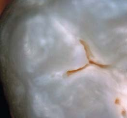
Рис. 11а. Дистальний горбик нижнього моляра. Глибока дистальна борозна розгалужується при основі горбика.
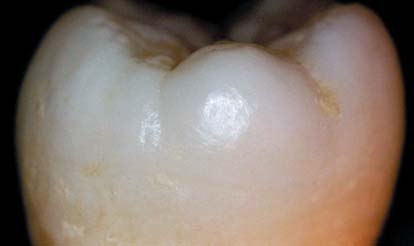
Рис. 11б. Дистальний горбик нижнього моляра. Глибока дистальна борозна розгалужується при основі горбика (а) і продовжується у поверхневому шарі емалі, перетинаючи крайовий гребінь і закінчуючись на рівні середньої 1/3 дистальної поверхні коронки зуба (б). (Фото О. Постолакі).
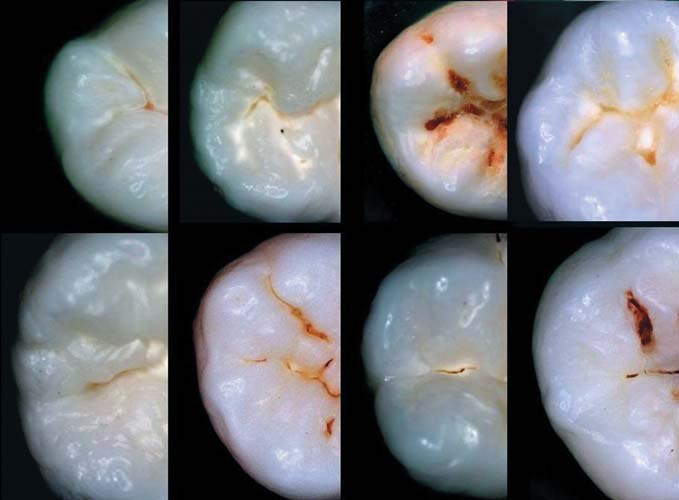
Рис. 12. Різні варіації розташування, фізіологічної редукції дистального горбика першого нижнього моляра і протяжності дистальної борозни. (Складена фотографія О. Постолакі).
Присутність на гіпоконіді (дистально-щічний горбик) і внутрішніх схилах у деяких випадках, включаючи і метаконід (дистально-язичний), фасеток стирання, в тому числі аналогічні на протоконусі (медіально-піднебінний) і метаконусі (дистально-щічний) першого верхнього моляра, є ознакою напрямку бічних рухів нижньої щелепи при ортогнатичному прикусі (рис. 10 а, б). Наші спостереження підтверджують результати досліджень І. Є. Шот (2005).12 Таким чином, логічно припустити, що за гострої або куполоподібної форми міжзубної перегородки будуть превалювати рухи в горизонтальній площині, а за скошеної – вертикальні. Урахування зазначених факторів оклюзії має важливе значення при ранньому виявленні функціонально перевантажених ділянок з ознаками підвищеного стирання емалі, при реставрації проксимальних контактів та прогнозуванні у зв'язку з цим ступеня ризику ускладнень у вигляді відколів або переломів в зоні контактів сусідніх зубів.
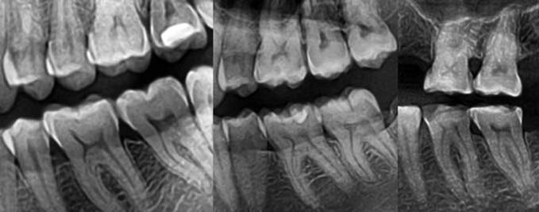
Рис. 13. Форма міжзубної перегородки в зоні молярів у нормі (а), за підвищеного стирання зуба 46 в межах емалі, частково дентину I ст. за А. Г. Молдовановим, Л. М. Демнером (1979) (б), при підвищеному стиранні I-II ст. за М. Г. Бушаном (1979), горизонтальна форма, змішаний тип (в).
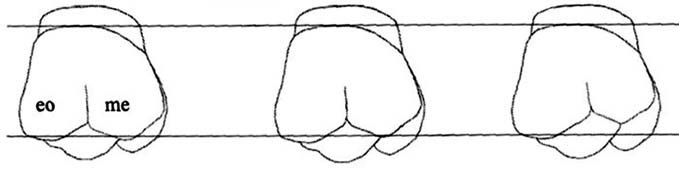
Рис. 14. Ступінь вираженості редукції вестибуло-лінгвального горбика-метаконуса верхнього першого моляра. (Схема І. М. Расулова, 2011).2
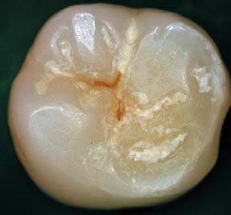
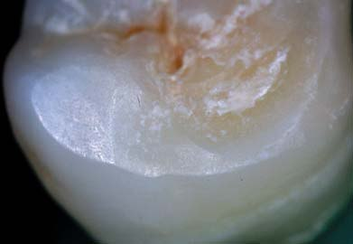
Рис. 15. Підвищене стирання в зоні дистальних горбиків зуба 37, II ст. за М. Г. Бушаном (1979), локалізована форма, вертикальний тип. (Фото О. Постолакі).
Дослідження, проведені Л. М. Ломіашвілі (1993), засвідчили певну залежність між розмірами зубів і карієсрезистентністю. В осіб, які мають високий рівень резистентності (за методикою В. Б. Недосєка) (табл. 1, 2), з результатів одонтометрії випливає, що ширина коронки першого моляра верхньої щелепи превалює над її довжиною, і навпаки, довжина коронки першого нижнього моляра превалює над її шириною.13
А. Ф. Алімова (2004) вивчала особливості прояву статевого деморфізму в періоді прикусу постійних зубів людини, який практично не висвітлюється в літературі. В основному подаються описи варіантів форми, розмірів, структури тканин зубів людини з урахуванням віку, індивідуальних одонтологічних ознак у залежності від типу конституції, а також расово-етнічні відмінності.
Аналіз одонтоскопічних ознак першого і нижнього молярів засвідчив деякі особливі статеві ознаки, характерні для цих зубів.
Так, у першого верхнього моляра осіб жіночої статі відзначається високий рівень диференціації: 1) значна протяжність вестибулярної вертикальної борозни, що сягає пояса зуба; 2) вираженість горбика Карабеллі; 3) часте розсічення поперечних гребінців з мезіального і дистального боку. У першого верхнього моляра осіб чоловічої статі видно морфологічні ознаки більшого функціонального навантаження, ніж у осіб жіночої статі, до яких можна віднести витягнутість коронки в мезіально-дистальному напрямку, що збільшує протяжність зубного ряду, масивність коренів, заокругленість їх верхівок. У жінок характерна «кліщоподібна» зігнутість коренів. Така конструкція кореня є ознакою незначних функціональних навантажень зуба.14
Для першого нижнього моляра осіб жіночої статі не характерна «витягнутість» коронки в мезіально-дистальному напрямку, і за формою вона ближча до квадрата. Особливої форми коронці зуба у чоловіків надає п'ятий горбик – гіпоконулід, який рідко зустрічається у жінок. Тому оклюзійна поверхня за формою ближча до трапеції. Гіпоконулід частіше розташований з вестибулярного боку, а вестибулярна борозна зміщена мезіально, що відображається на рисунку борозен. У чоловіків має вигляд «Y-візерунка», а у жінок «плюс-візерунка».14
Ми провели власні дослідження розмірів зубів на гіпсових моделях. При одонтометрії дотримувалися деяких загальноприйнятих правил, описаних А. А. Зубовим у роботі «Методичний посібник з антропологічного аналізу одонтологічних матеріалів» (2006). Вимірювання зубів робили циркулем із загостреними ніжками і ноніусом, що дає точність 0,1 мм. Повідомляється, що існують два прийоми вимірювань: 1) за максимальними величинами діаметрів (метод Р. Мартіна) і 2) за контактними номерами точок (метод Р. Сельмер-Ольсена). Вестибуло-лінгвальний розмір вимірюється ближче до цервікальної третини, в місці найбільшого діаметра коронки, мезіо-дистальний – на рівні жувальної поверхні між точками контакту із сусідніми зубами. А. А. Зубов зазначає, що висоту є сенс вимірювати лише за дуже малої стертості зубів, і щодо висоти коронки молярів мають місце значні розбіжності між дослідниками. Ми використовували метод Ремане-Вейденрейха, де висота коронки береться на верхніх молярах як відстань між емалево-цементною межею і вершиною параконуса, а на нижніх молярах – як відстань між емалево-цементною межею і вершиною протоконіда.1, 8 Найпоширенішою методикою вивчення зубів є гіпсові діагностичні моделі. Подаються відомості з посиланням на авторів (А. Люндстром, Л. Луссел, 1953), що при вимірюванні на моделях помилка в бік збільшення розміру сягає 1-2% у порівнянні з вимірами безпосередньо на зубах.2 Оскільки вимірювання робили на гіпсових моделях, то вказуємо додатково поправку з урахуванням сказаного на 0,1+0,1 = 0,2 мм. Результати подано в таблицях 1, 2 у порівнянні з даними інших авторів.7, 13
| Морфометричні параметри зуба | В.А. Наумов* (1966) | С. Гешева (1980) | С.С. Михайлов (1984) | Л.М. Ломіашвілі (1993) | R.C. Wheeler (1959) | J.B. Woelfel (1997) | О.І. Постолакі (2017) |
|---|---|---|---|---|---|---|---|
| Висота коронки | 7,2 | 6,5 | 6,0-8,5 | 5,62 | 6,3-9,6 | 7,7 | 6,2 (-0,2) |
| Розмір коронки В-Я | 11,2 | 11,4 | – | 11,92 | 10,0 | 9,8-14,1 | 10,6 (-0,2) |
| Розмір коронки М-Д | 7,6 | 10,1 | – | 10,90 | 10,7 | 8,9-13,3 | 10,3 (-0,2) |
| Морфометричні параметри зуба | В.А. Наумов* (1966) | С. Гешева (1980) | С.С. Михайлов (1984) | Л.М. Ломіашвілі (1993) | R.C. Wheeler (1959) | J.B. Woelfel (1997) | О.І. Постолакі (2017) |
|---|---|---|---|---|---|---|---|
| Висота коронки | 6,7 | 6,4 | 6,0-9,0 | 6,23 | 7,7 | 6,1-9,6 | 6,4 (-0,2) |
| Розмір коронки В-Я | 8,5 | 10,3 | – | 10,89 | 10,3 | 8,9-13,7 | 10,2 (-0,2) |
| Розмір коронки М-Д | 8,9 | 11,1 | – | 11,19 | 11,2 | 8,8-14,5 | 10,8 (-0,2) |
І. М. Расулов (2011) на основі аналізу результатів досліджень сформулював кілька припущень для пояснення ролі в розвитку карієсу фісур, розташованих на поверхні дистальних горбиків зубів. Перше – ураженню каріозним процесом може сприяти той факт, що ці горбики, піддані процесам редукції, структурно більш мінливі і варіабельні, у зв'язку з чим у них погіршується трофіка, що підвищує ризик розвитку карієсу (рис. 11, 12). Друге – той факт, що фісури на дистальних горбиках менші за розмірами, ніж горбики, менш схильні до карієсу (рис. 7 а, б). Третє – фісури сприяють накопиченню в них залишків їжі, мікроорганізмів і, відповідно, поганому самоочищенню зубів у цих зонах, в тому числі при недостатньому очищенні зубів зубною щіткою, від чого страждає гігієна окремих зубів і всієї ротової порожнини.2
Наші власні спостереження дозволяють додати до зазначених вище причин висоту і форму клінічної коронки і власне дистального горбика, площу і топографію проксимального контактного пункту, від положення коронки першого верхнього моляра по відношенню до сагітальної оклюзійної кривої, яку практично встановлюють за рівнем перекриття нижніх щічних горбів верхніми.
Висновки
Таким чином, застосування одонтоскопічного, одонтометричного і мікроскопічного методів у вивченні анатомо-морфологічних особливостей будови перших молярів обох щелеп дозволило встановити раніше не описані характерні одонтологічні ознаки з урахуванням особливостей оклюзійної, проксимальних поверхонь і топографії міжзубних контактів. Теоретична значущість роботи полягає в розширенні базових, фундаментальних знань, в тому числі про анатомічну будову перших постійних молярів. Уточнено і доповнено відомості про мікроархітектоніку та біомеханіку проксимальних контактних майданчиків як складних суглобів, а також фасеток стирання. Були визначені морфологічні варіанти будови емалевих гребенів горбиків, включаючи основні варіації одонтогліфіки. Методом мікроскопії досліджено особливості мікроскопічної будови фісур, і на шліфах виявлена одна з причин розвитку карієсу на опорному горбику моляра. Достовірно визначено залежність між анатомічною будовою крайових емалевих гребенів суміжних зубів, топографією і протяжністю міжзубних контактних пунктів. На підставі отриманих даних і запропонованих авторських класифікацій пропонується використовувати одержані відомості в діагностиці, реставрації (прямій і непрямій) та в експертній оцінці якості відновного лікування.
Література
- Зубов А. А. Одонтология. Методика антропологических исследований / А. А. Зубов; АН СССР. Ин-т этнографии им. Н. Н. Миклухо-Маклая. – М.: Наука, 1968. – 199 с.
- Расулов И. М. Одонтологические и одонтоглифические исследования особенностей зубов у лиц различных национальностей и перспективы использования полученных данных в стоматологии. Автореф. дис. ... д-ра мед. наук. М., 2011. – 46 с.
- Зубов А. А., Халдеева Н. И. Одонтология в современной антропологии. М.: Наука, 1989. – 229 с.
- Черняк В. В. Одонтологическая характеристика больших коренных зубов в норме и при фиссурно-ямочном кариесе. Автореф. дис. ... канд. мед. наук. Винница, 2009. – 20 с.
- Демчина Г. Р. Прогнозирование кариесрезистентности эмали на основании одонтоглифики первых нижних постоянных моляров. Автореф. дис. … канд. мед наук. Львов, 2002. – 17 с.
- Писаренко Е. А. Характеристика апроксимального кариеса с позиции одонтоглифики // Вісник проблем біології і медицини. – 2013. – № 3. – vol. 2. – С. 327-329.
- Дмитриенко С. В. Практическое руководство по моделированию зубов. / С. В. Дмитриенко, Л. П. Иванов, А. И. Краюшкин, М. М. Пожарницкая. / – М.: ГОУ ВУНМЦ МЗ РФ, 2001. – 240 с.
- Зубов А. А. Методическое пособие по антропологическому анализу одонтологических материалов. М., 2006. – 72 с.
- Окклюзия и клиническая практика / Под ред. И. Клинеберга, Р. Джагера; Пер. с англ.; Под общ. ред. М. М. Антоника. – 2-е изд. – М.: МЕДпресс-информ, – 2008. – 200 с.
- Гаврилов Е. И. Биология пародонта и пульпы зуба. М.: Медицина, 1969. – 213 с.
- Криштаб С. И. Аномалии нижней челюсти. Киев: Здоров'я, – 1975. – 167 с.
- Шотт И. Е. Критерии оценки врачебных ошибок стоматологов-ортопедов Республики Беларусь. Автореф. дис. ... канд. мед. наук. М.: 2005. – 24 с.
- Ломиашвили Л. М. Художественное моделирование и реставрация зубов. Медицинская книга, 2004. – 252 с.
- Алимова А. Ф. Обоснование выбора анатомической формы постоянных зубов с учетом полового диморфизма при лечении пациентов с дефектами зубов и зубных рядов. Автореф. дис. … канд. мед наук. Волгоград, 2004. – 24 с.